Docker 容器技术
Docker 容器技术
hexo template generate by typora plugin templater
Docker容器技术
Docker是一门平台级别的技术，涉及的范围很广，所以，在开始之前，请确保你完成：Java SpringBoot 篇（推荐完成SpringCloud篇再来）视频教程及之前全部路线，否则学习会非常吃力，另外推荐额外掌握：《计算机网络》、《操作系统》相关知识。学一样东西不能完全靠记忆来完成，而是需要结合自己所学的基础知识加以理解，一般来说，单凭记忆能够掌握的东西往往是最廉价的。
Docker官网： https://www.docker.com
课前准备： 配置2C2G以上Linux服务器一台，云服务器、虚拟机均可。
容器技术入门
随着时代的发展，Docker也逐渐走上了历史舞台，曾经我们想要安装一套环境，需要花费一下午甚至一整天来配置和安装各个部分（比如运行我们自己的SpringBoot应用程序，可能需要安装数据库、安装Redis、安装MQ等，各种各样的环境光是安装就要花费很多时间，真的是搞得心态爆炸），而有了Docker之后，我们的程序和环境部署就变得非常简单了，我们只需要将这些环境一起打包成一个镜像。而到服务器上部署时，可以直接下载镜像实现一键部署，是不是很方便？
包括我们在学习SpringCloud需要配置的各种组件，可能在自己电脑的环境中运行会遇到各种各样的问题（可能由于电脑上各种环境没配置，导致无法运行），而现在只需要下载镜像就能直接运行，所有的环境全部在镜像中配置完成，开箱即用。
真的有这么神奇吗？我们来试试看。
环境安装和部署
首先我们还是先将Docker环境搭建好（建议和我同一个环境，不然出了问题只能自己想办法了），这里我们使用：
- Ubuntu 22.04 操作系统
Docker分为免费的CE（Community Edition）社区版本和EE（Enterprise Edition）企业级付费版本，所以我们这里选择docker-ce进行安装。官方安装文档：https://docs.docker.com/engine/install/ubuntu/
首先安装一些工具：
sh 复制代码
1 | |
不过在Ubuntu22.04已经默认安装好了。接着安装官方的GPG key：
sh 复制代码
1 | |
最后将Docker的库添加到apt资源列表中：
sh 复制代码
1 | |
接着我们更新一次apt：
sh 复制代码
1 | |
最后安装Docker CE版本：
sh 复制代码
1 | |
等待安装完成就可以了：
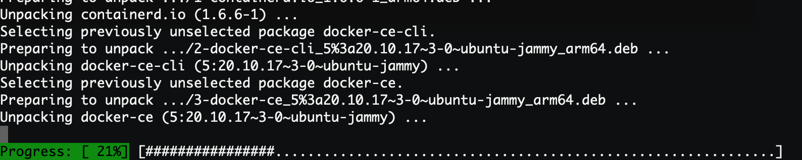
可以看到安装成功后版本是20.10.17，当然可能你们安装的时候就是更新的版本了。最后我们将当前用户添加到docker用户组中，不然每次使用docker命令都需要sudo执行，很麻烦：
sh 复制代码
1 | |
配置好后，我们先退出SSH终端，然后重新连接就可以生效了。
这样我们Docker 的学习环境就配置好了，现在我们就尝试通过Docker来部署一个Nginx服务器试试看，使用很简单，只需要一个命令就可以了（当然现在看不懂没关系，我们后面会细嗦）：
sh 复制代码
1 | |
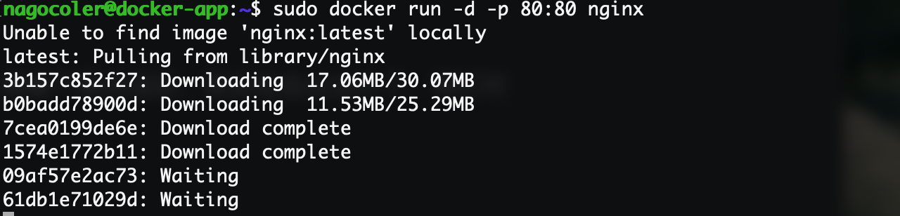
首选它会从镜像仓库中下载对应的镜像，国内访问速度还行，不需要单独配置镜像源。接着下载完成后，就会在后台运行了，我们可以使用浏览器访问试试看：
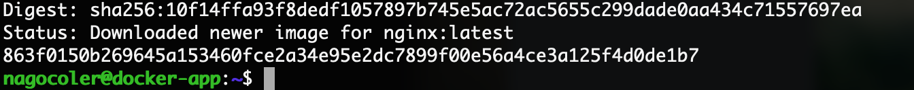
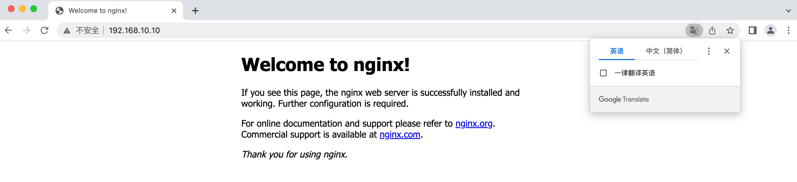
可以看到，Nginx服务器已经成功部署了，但是实际上我们并没有在Ubuntu中安装Nginx，而是通过Docker运行的镜像来进行服务器搭建的，是不是感觉玩法挺新奇的。除了Nginx这种简单的应用之外，我们还可以通过Docker来部署复杂应用，之后我们都会一一进行讲解的。
从虚拟机到容器
前面我们成功安装了Docker学习环境，以及浅尝了一下Docker为我们带来的应用快速部署。在正式进入学习之前，我们就先从Docker的发展开始说起。
在Docker出现之前，虚拟化技术可以说是占据了主导地位。首先我们来谈谈为什么会出现虚拟化技术，我们知道在企业中服务器可以说是必不可少的一种硬件设施了，服务器也是电脑，但是不像我们的家用电脑，服务器的配置是非常高的，我们家用电脑的CPU可能最高配也就20核了，内存很少有超过128G的电脑，64G内存的家用电脑可以算奢侈了。而服务器不一样，服务器级别的CPU动辄12核，甚至服务器还能同时安装多块CPU，能直接堆到好几十核：
我们家用级CPU一般是AMD的锐龙系列和Intel的酷睿系列（比如i3 i5 i7 i9），而服务器CPU一般是Intel的志强（Xeno）系列，这种CPU的特点就是核心数非常多：
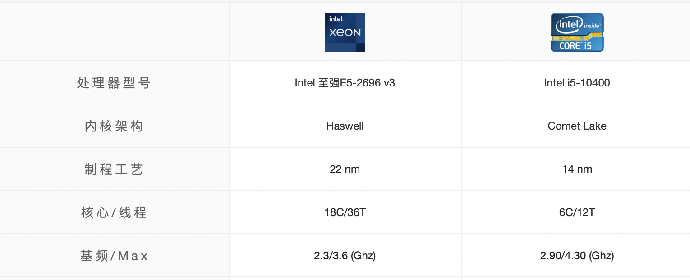
并且服务器CPU相比家用CPU的功耗也会更大，因此服务器CPU的发热量非常高，如果你有幸去过机房，你会听见散热风扇猛烈转动的声音（但是服务器CPU的频率没有家用级CPU高，一般大型游戏要求的是高频率而不是核心数，而且功耗也比较大，所以并不适合做家用电脑，所以以后在网上买台式机，看到什么“i9级”CPU千万别买，是这些黑心商家把国外服务器上淘汰下来的服务器CPU（洋垃圾）装成电脑卖给你，所以会很便宜，同时核心数又能媲美i9，所以还是一分钱一分货实在）
服务器无论是CPU资源还是内存资源都远超家用电脑，而我们编写的Java后端项目，最后都会运行在这些服务器上，不过有一个问题，服务器既然有这么丰富的硬件资源，就跑咱们这一个小Java后端，是不是有点核弹炸蚊子的感觉了？可能顶多就用了服务器5%的硬件资源，服务器这么牛就运行个这也太浪费了吧。
所以，为了解决这种资源利用率只有5%-15%的情况，咱们能不能想个办法，把这一台服务器分成多个小服务器使用，每个小服务器只分配一部分的资源，比如分一个小服务器出去，只给2个CPU核心和4G内存。但是由于设计上的问题，我们的电脑只能同时运行一个操作系统，那么怎么办呢？此时虚拟化技术就开始兴起了。
虚拟化使用软件来模拟硬件并创建虚拟计算机系统。这样一来，企业便可以在单台服务器上运行多个虚拟系统，也就是运行多个操作系统和应用，而这可以实现规模经济以及提高效益。比如我们电脑上经常使用的VMware就是一种民用级虚拟化软件：
我们可以使用VMware来创建虚拟机，这些虚拟机实际上都是基于我们当前系统上的VMware软件来运行的，当然VMware也有服务器专用的虚拟化软件，有了虚拟化之后，我们的服务器就像这样：
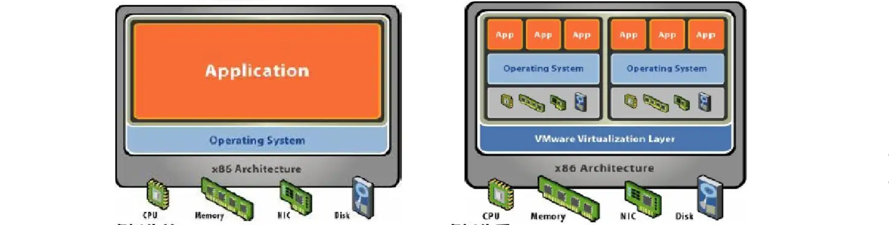
相当于通过虚拟机模拟了很多来电脑出来，这样我们就可以在划分出来的多台虚拟机上分别安装系统和部署我们的应用程序了，并且我们可以自由分配硬件资源，合理地使用。一般在企业中，不同的应用程序可能会被分别部署到各个服务器上，隔离开来，此时使用虚拟机就非常适合。
实际上我们在什么腾讯云、阿里云租的云服务器，都是经过虚拟化技术划分出来的虚拟机而已。
那么，既然虚拟机都这么方便了，容器又是怎么杀出一条血路的呢？我们先来看看什么是容器。
容器和虚拟机比较类似，都可以为应用提供封装和隔离，都是软件，但是容器中的应用运行是寄托于宿主操作系统的，实际上依然是在直接使用操作系统的资源，当然应用程序之间环境依然是隔离的，而虚拟机则是完全模拟一台真正的电脑出来，直接就是两台不同的电脑。
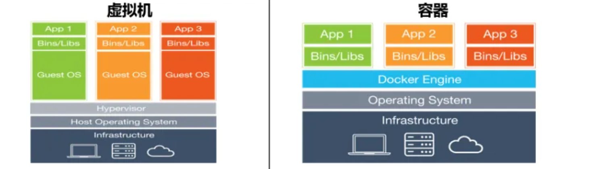
因此容器相比虚拟机就简单多了，并且启动速度也会快很多，开销小了不少。
不过容器火的根本原因还是它的集装箱思想，我们知道，如果我们要写一个比如论坛、电商这类的Java项目，那么数据库、消息队列、缓存这类中间件是必不可少的，因此我们如果想要将一个服务部署到服务器，那么实际上还要提前准备好各种各样的环境，先安装好MySQL、Redis、RabbitMQ等应用，配置好了环境，再将我们的Java应用程序启动，整个流程下来，光是配置环境就要浪费大量的时间，如果是大型的分布式项目，可能要部署很多台机器，那岂不是我们得一个一个来？项目上个线就要花几天时间，显然是很荒唐的。
而容器可以打包整个环境，比较MySQL、Redis等以及我们的Java应用程序，可以被一起打包为一个镜像，当我们需要部署服务时，只需要像我们之前那样，直接下载镜像运行即可，不需要再进行额外的配置了，整个镜像中环境是已经配置好的状态，开箱即用。
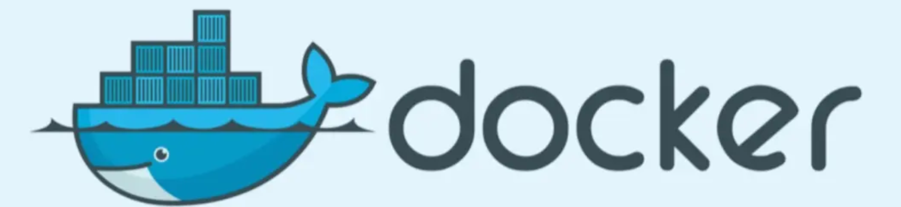
而我们要重点介绍的就是Docker了，可以看到它的图标就是一只鲸鱼，鲸鱼的上面是很多个集装箱，每个集装箱就是我们的整个环境+应用程序，Docker可以将任何应用及其依赖打包为一个轻量级，可移植，自包含的容器，容器可以运行在几乎所有的操作系统上。
容器工作机制简述
我们先来看看Docker的整体架构：
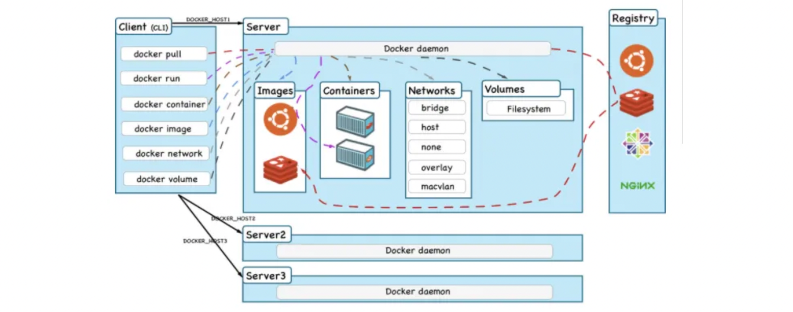
实际上分为三个部分：
- Docker 客户端：也就是我们之前使用的docker命令，都是在客户端上执行的，操作会发送到服务端上处理。
- Docker 服务端：服务端就是启动容器的主体了，一般是作为服务在后台运行，支持远程连接。
- Registry：是存放Docker镜像的仓库，跟Maven一样，也可以分公有和私有仓库，镜像可以从仓库下载到本地存放。
当我们需要在服务器上部署一个已经打包好的应用和环境，我们只需要下载打包好的镜像就可以了，我们前面执行了：
sh 复制代码
1 | |
实际上这个命令输入之后：
- Docker客户端将操作发送给服务端，告诉服务端我们要运行nginx这个镜像。
- Docker服务端先看看本地有没有这个镜像，发现没有。
- 接着只能从公共仓库Docker Hub去查找下载镜像了。
- 下载完成，镜像成功保存到本地。
- Docker服务端加载Nginx镜像，启动容器开始正常运行（注意容器和其他容器之间，和外部之间，都是隔离的，互不影响）
所以，整个流程中，Docker就像是一搜运输船，镜像就像是集装箱，通过运输船将世界各地的货物送往我们的港口，货物到达港口后，Docker并不关心集装箱里面的是什么，只需要创建容器开箱即用就可以了。相比我们传统的手动安装配置环境，不知道方便了几个层次。
不过容器依然是寄托于宿主主机的运行的，所以一般在生产环境下，都是通过虚拟化先创建多台主机，然后再到各个虚拟机中部署Docker，这样的话，运维效率就大大提升了。
从下一章开始，我们就正式地来学习一下Docker的各种操作。
容器与镜像
要启动容器最关键的就是镜像，我们来看看镜像相关的介绍。
初识容器镜像
首先我们来了解一下镜像的相关操作，比如现在我们希望把某个镜像从仓库下载到本地，这里使用官方的hello-world镜像：
sh 复制代码
1 | |
只需要输入pull命令，就可以直接下载到指定的镜像了：
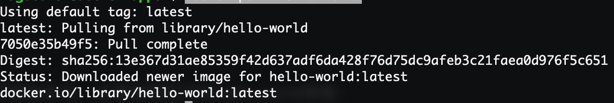
可以看到对上面一行有一句Using default tag，实际上一个镜像的名称是由两部分组成的，一个是repository，还有一个是tag，一般情况下约定repository就是镜像名称，tag作为版本，默认为latest，表示最新版本。所以指定版本运行的话：
sh 复制代码
1 | |
之后为了教学方便，我们就直接使用默认的tag，不去指定版本了。
镜像下载之后会存放在本地，要启动这个镜像的容器，实际上就像我们之前那样，输入run命令就可以了：
sh 复制代码
1 | |
当然如果仅仅是只想创建而不想马上运行的话，可以使用create命令：
sh 复制代码
1 | |
可以看到成功启动了：
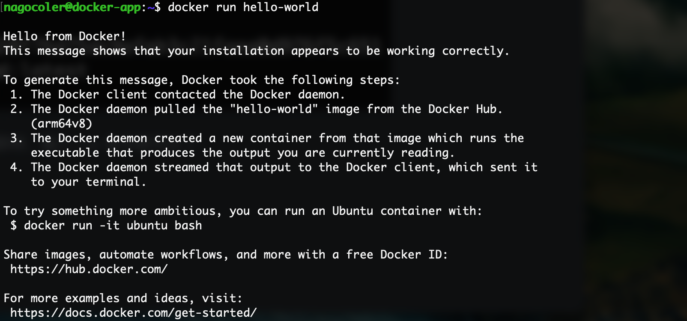
启动之后，会使用当前镜像自动创建一个容器，我们可以输入ps命令来查看当前容器的容器列表：
复制代码
1 | |
注意后面要加一个-a表示查看所有容器（其他选项可以使用-h查看），如果不加的话，只会显示当前正在运行的容器，而HelloWorld是一次性的不是Nginx那样的常驻程序，所以容器启动打印了上面的内容之后，容器就停止运行了：
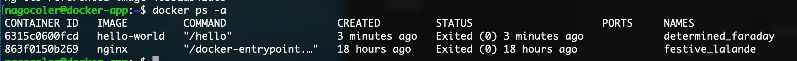
可以看到容器列表中有我们刚刚创建的hello-world以及我们之前创建的nginx（注意同一个镜像可以创建多个容器），每个容器都有一个随机生成的容器ID写在最前面，后面是容器的创建时间以及当前的运行状态，最后一列是容器的名称，在创建容器时，名称可以由我们指定也可以自动生成，这里就是自动生成的。
我们可以手动指定名称启动，在使用run命令时，添加--name参数即可：
sh 复制代码
1 | |
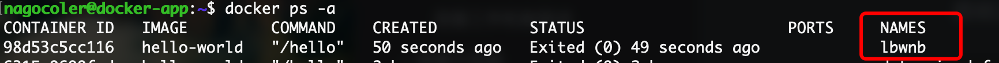
我们可以手动开启处于停止状态的容器：
sh 复制代码
1 | |
注意启动的对象我们要填写容器的ID或是容器的名称才可以，容器ID比较长，可以不写全只写一半，但是你要保证你输入的不完全容器ID是唯一的。
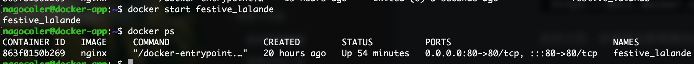
如果想要停止容器直接输入stop命令就可以了：
sh 复制代码
1 | |
或是重启：
sh 复制代码
1 | |
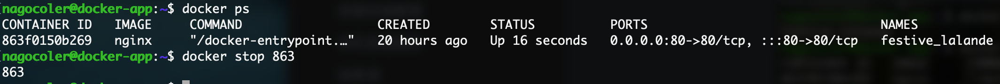
如果我们不需要使用容器了，那么可以将容器删除，但是注意只有容器处于非运行状态时才可以删除：
sh 复制代码
1 | |
当然如果我们希望容器在停止后自动删除，我们可以在运行时添加--rm参数：
sh 复制代码
1 | |
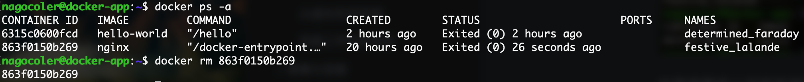
删除后，容器将不复存在，当没有任何关于nginx的容器之后，我们可以删除nginx的本地镜像：
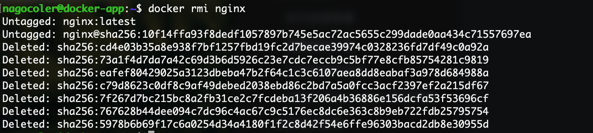
我们可以使用images命令来检查一下当前本地有那些镜像：
sh 复制代码
1 | |
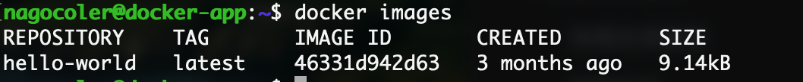
至此，我们已经了解了Docker的简单使用，在后面的学习中，我们还会继续认识更多的玩法。
镜像结构介绍
前面我们了解了Docker的相关基本操作，实际上容器的基石就是镜像，有了镜像才能创建对应的容器实例，那么我们就先从镜像的基本结构开始说起，我们来看看镜像到底是个什么样的存在。
我们在打包项目时，实际上往往需要一个基本的操作系统环境，这样我们才可以在这个操作系统上安装各种依赖软件，比如数据库、缓存等，像这种基本的系统镜像，我们称为base镜像，我们的项目之后都会基于base镜像进行打包，当然也可以不需要base镜像，仅仅是基于当前操作系统去执行简单的命令，比如我们之前使用的hello-world就是。
一般base镜像就是各个Linux操作系统的发行版，比如我们正在使用的Ubuntu，还有CentOS、Kali等等。这里我们就下载一下CentOS的base镜像：
sh 复制代码
1 | |
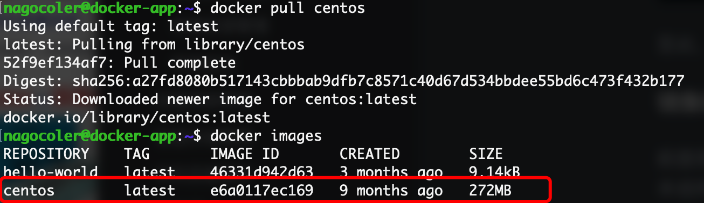
可以看到，CentOS的base镜像就已经下载完成，不像我们使用完整系统一样，base镜像的CentOS省去了内核，所以大小只有272M，这里需要解释一下base镜像的机制：
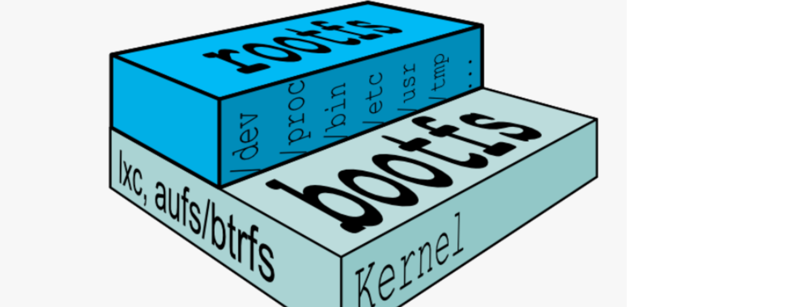
Linux操作体系由内核空间和用户空间组成，其中内核空间就是整个Linux系统的核心，Linux启动后首先会加bootfs文件系统，加载完成后会自动卸载掉，之后会加载用户空间的文件系统，这一层是我们自己可以进行操作的部分：
- bootfs包含了BootLoader和Linux内核，用户是不能对这层作任何修改的，在内核启动之后，bootfs会自动卸载。
- rootfs则包含了系统上的常见的目录结构，包括
/dev、/proc、/bin等等以及一些基本的文件和命令，也就是我们进入系统之后能够操作的整个文件系统，包括我们在Ubuntu下使用的apt和CentOS下使用的yum，都是用户空间上的。
base镜像底层会直接使用宿主主机的内核，也就是说你的Ubuntu内核版本是多少，那么base镜像中的CentOS内核版本就是多少，而rootfs则可以在不同的容器中运行多种不同的版本。所以，base镜像实际上只有CentOS的rootfs，因此只有300M大小左右，当然，CentOS里面包含多种基础的软件，还是比较臃肿的，而某些操作系统的base镜像甚至都不到10M。
使用uname命令可以查看当前内核版本：
因此，Docker能够同时模拟多种Linux操作系统环境，就不足为奇了，我们可以尝试启动一下刚刚下载的base镜像：
sh 复制代码
1 | |
注意这里需要添加-it参数进行启动，其中-i表示在容器上打开一个标准的输入接口，-t表示分配一个伪tty设备，可以支持终端登录，一般这两个是一起使用，否则base容器启动后就自动停止了。
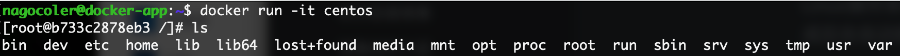
可以看到使用ls命令能够查看所有根目录下的文件，不过很多命令都没有，连clear都没有，我们来看看内核版本：
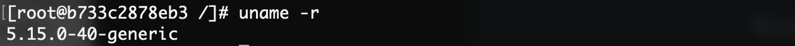
可以看到内核版本是一样的（这也是缺点所在，如果软件对内核版本有要求的话，那么此时使用Docker就直接寄了），我们输入exit就可以退出容器终端了，可以看到退出后容器也停止了：
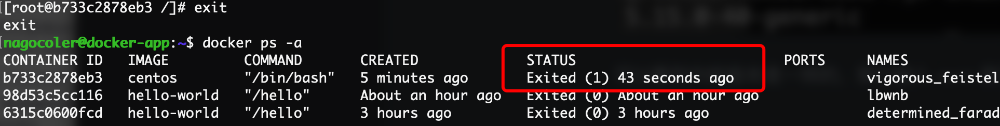
当然我们也可以再次启动，注意启动的时候要加上-i才能进入到容器进行交互，否则会在后台运行：
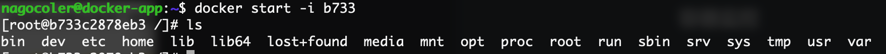
基于base镜像，我们就可以在这基础上安装各种各样的软件的了，几乎所有的镜像都是通过在base镜像的基础上安装和配置需要的软件构建出来的：
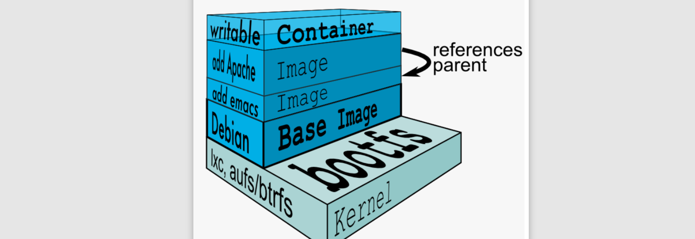
每安装一个软件，就在base镜像上一层层叠加上去，采用的是一种分层的结构，这样多个容器都可以将这些不同的层次自由拼装，比如现在好几个容器都需要使用CentOS的base镜像，而上面运行的软件不同，此时分层结构就很爽了，我们只需要在本地保存一份base镜像，就可以给多个不同的容器拼装使用，是不是感觉很灵活？
我们看到除了这些软件之外，最上层还有一个可写容器层，这个是干嘛的呢，为什么要放在最上面？
我们知道，所有的镜像会叠起来组成一个统一的文件系统，如果不同层中存在相同位置的文件，那么上层的会覆盖掉下层的文件，最终我们看到的是一个叠加之后的文件系统。当我们需要修改容器中的文件时，实际上并不会对镜像进行直接修改，而是在最顶上的容器层（最上面一般称为容器层，下面都是镜像层）进行修改，不会影响到下面的镜像，否则镜像就很难实现多个容器共享了。所以各个操作如下：
- 文件读取：要读取一个文件，Docker会最上层往下依次寻找，找到后则打开文件。
- 文件创建和修改：创建新文件会直接添加到容器层中，修改文件会从上往下依次寻找各个镜像中的文件，如果找到，则将其复制到容器层，再进行修改。
- 删除文件：删除文件也会从上往下依次寻找各个镜像中的文件，一旦找到，并不会直接删除镜像中的文件，而是在容器层标记这个删除操作。
也就是说，我们对整个容器内的文件进行的操作，几乎都是在最上面的容器层进行的，我们是无法干涉到下面所有的镜像层文件的，这样就很好地保护了镜像的完整性，才能实现多个容器共享使用。
构建镜像
前面我们已经了解了Docker镜像的结构，实际上所有常用的应用程序都有对应的镜像，我们只需要下载这些镜像然后就可以使用了，而不需要自己去手动安装，顶多需要进行一些特别的配置。当然要是遇到某些冷门的应用，可能没有提供镜像，这时就要我们手动去安装，接着我们就来看看如何构建我们自己的Docker镜像。构建镜像有两种方式，一种是使用commit命令来完成，还有一种是使用Dockerfile来完成，我们先来看第一种。
这里我们就做一个简单的例子，比如我们现在想要在Ubuntu的base镜像中安装Java环境，并将其打包为新的镜像（这个新的镜像就是一个包含Java环境的Ubuntu系统镜像）
咱们先启动Ubuntu镜像，然后使用yum命令（跟apt比较类似）来安装Java环境，首先是run命令：
sh 复制代码
1 | |
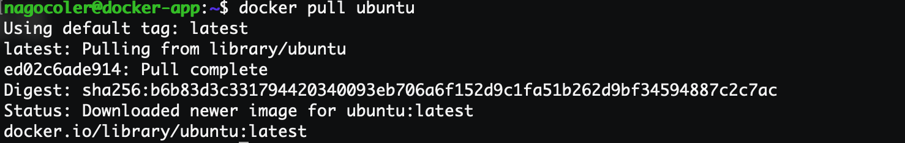
接着启动：
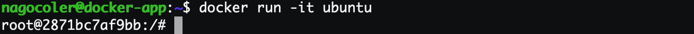
直接使用apt命令来安装Java环境，在这之前先更新一下，因为是最小安装所以本地没有任何软件包：
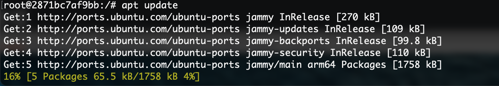
接着输入：
sh 复制代码
1 | |
等待安装完成：
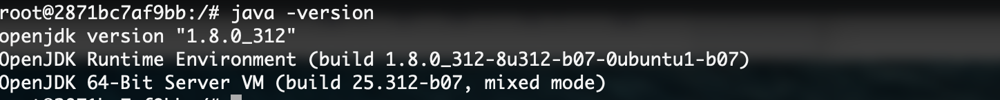
这样，我们就完成了对Java环境的安装了，接着我们就可以退出这个镜像然后将其构建为新的镜像：
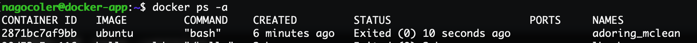
使用commit命令可以将容器保存为新的镜像：
sh 复制代码
1 | |
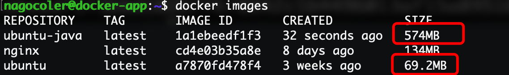
可以看到安装了软件之后的镜像大小比我们原有的大小大得多，这样我们就可以通过这个镜像来直接启动一个带Java环境的Ubuntu操作系统容器了。不过这种方式虽然自定义度很高，但是Docker官方并不推荐，这样的话使用者并不知道镜像是如何构建出来的，是否里面带了后门都不知道，并且这样去构建效率太低了，如果要同时构建多种操作系统的镜像岂不是要一个一个去敲？我们作为普通用户实际上采用Dokcerfile的方式会更好一些。
我们来看看如何使用Dockerfile的形式创建一个带Java环境的Ubuntu系统镜像。首先直接新建一个名为Dockerfile的文件：
sh 复制代码
1 | |
接着我们来进行编辑，Dockerfile内部需要我们编写多种指令来告诉Docker我们的镜像的相关信息：
dockerfile 复制代码
1 | |
首先我们需要使用FROM指令来选择当前镜像的基础镜像（必须以这个指令开始），这里我们直接使用ubuntu作为基础镜像即可，当然如果不需要任何基础镜像的话，直接使用scratch表示从零开始构建，这里就不演示了。
基础镜像设定完成之后，我们就需要在容器中运行命令来安装Java环境了，这里需要使用RUN指令：
dockerfile 复制代码
1 | |
每条指令执行之后，都会生成一个新的镜像层。
OK，现在我们的Dockerfile就编写完成了，只需要完成一次构建即可：
sh 复制代码
1 | |
执行后，Docker会在构建目录中寻找Dockerfile文件，然后开始依次执行Dockerfile中的指令：
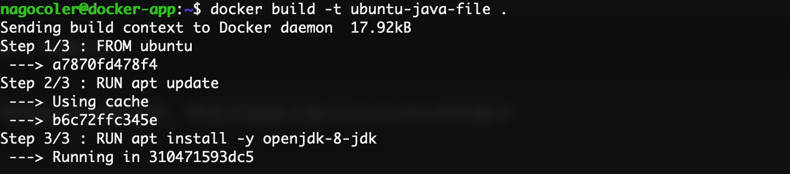
构建过程的每一步都非常清晰地列出来了，一共三条指令对应三步依次进行，我们稍微等待一段时间进行安装，安装过程中所以的日志信息会直接打印到控制台（注意Docker镜像构建有缓存机制，就算你现在中途退出了，然后重新进行构建，也会直接将之前已经构建好的每一层镜像，直接拿来用，除非修改了Dockerfile文件重新构建，只要某一层发生变化其上层的构建缓存都会失效，当然包括pull时也会有类似的机制）
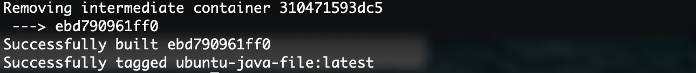
最后成功安装，会出现在本地：
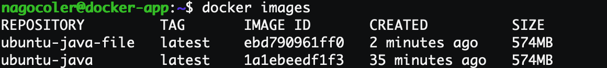
可以看到安装出来的大小跟我们之前的是一样的，因为做的事情是一模一样的。我们可以使用history命令来查看构建历史：
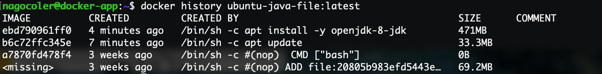
可以看到最上面两层是我们通过使用apt命令生成的内容，就直接作为当前镜像中的两层镜像，每层镜像都有一个自己的ID，不同的镜像大小也不一样。而我们手动通过commit命令来生成的镜像没有这个记录：
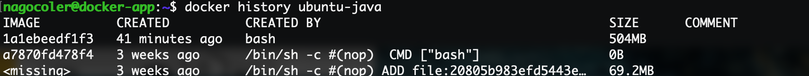
如果遇到镜像ID为missing的一般是从Docker Hub中下载的镜像会有这个问题，但是问题不大。用我们自己构建的镜像来创建容器就可以直接体验带Java环境的容器了：
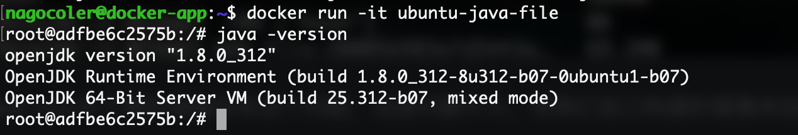
有关Dockerfile的其他命令，我们还会在后续的学习中逐步认识。
发布镜像到远程仓库
前面我们学习了如何构建一个Docker镜像，我们可以将自己的镜像发布到Docker Hub中，就像Git远程仓库一样，我们可以将自己的镜像上传到这里：https://hub.docker.com/repositories，没有账号的先去进行注册。
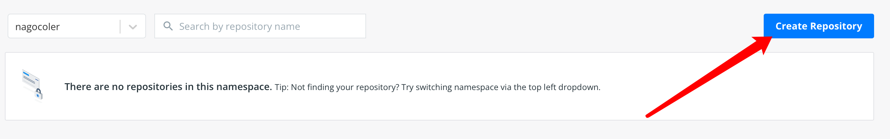
点击右上角的创建仓库，然后填写信息：
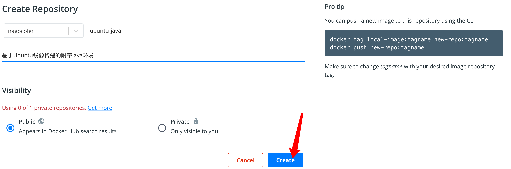
创建完成后，我们就有了一个公共的镜像仓库，我们可以将本地的镜像上传了，上传之前我们需要将镜像名称修改得规范一点，这里使用tag命令来重新打标签：
sh 复制代码
1 | |
这里我们将版本改成1.0版本吧，不用默认的latest了。
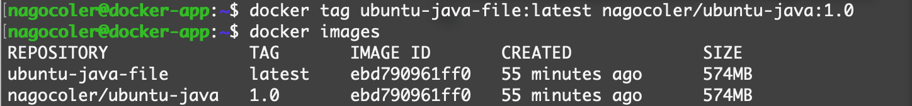
修改完成后，会创建一个新的本地镜像，名称就是我们自己定义的了。接着我们需在本地登录一下：
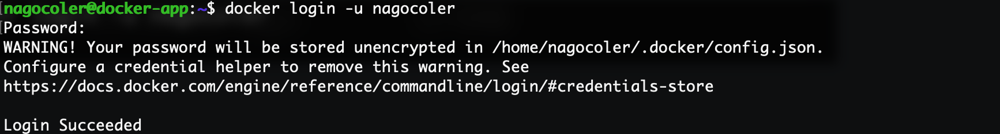
登录成功后我们就可以上传了：
sh 复制代码
1 | |
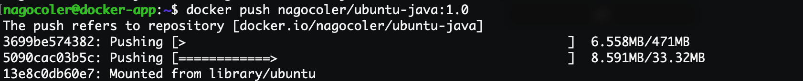
哈哈，500M的东西传上去，还是有点压力的，如果实在太慢各位可以重新做一个简单点的镜像。上传完成后，打开仓库，可以看到已经有一个1.0版本了：
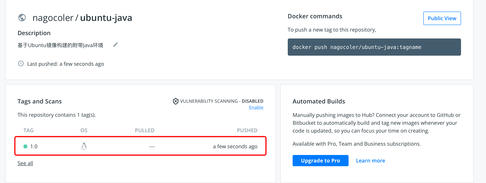
注意公共仓库是可以被搜索和下载的，所以我们这里把本地的镜像全部删掉，去下载我们刚刚上传好的镜像。这里我们先搜索一下，搜索使用search命令即可：
sh 复制代码
1 | |
我们可以使用pull命令将其下载下来：
sh 复制代码
1 | |
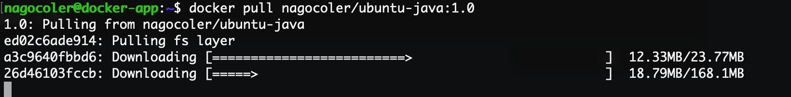
上传之后的镜像是被压缩过的，所以下载的内容就比较少一些。运行试试看：
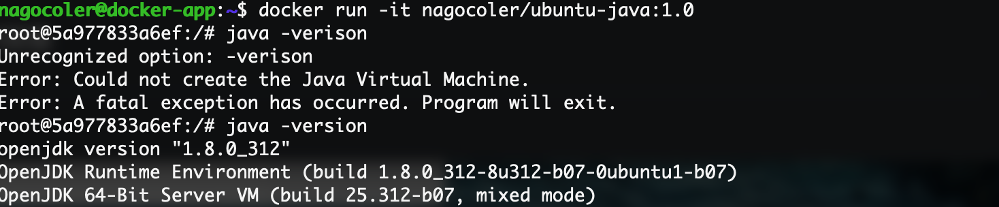
当然各位也可以让自己的同学或是在其他机器上尝试下载自己的镜像，看看是不是都可以正常运行。
Docker Hub也可以自行搭建私服，但是这里就不多做介绍了，至此，有关容器和镜像的一些基本操作就讲解得差不多了。
前往下一部分继续阅读，当前位于 1 / 3 分段
————————————————
版权声明：本文为柏码知识库版权所有，禁止一切未经授权的转载、发布、出售等行为，违者将被追究法律责任。